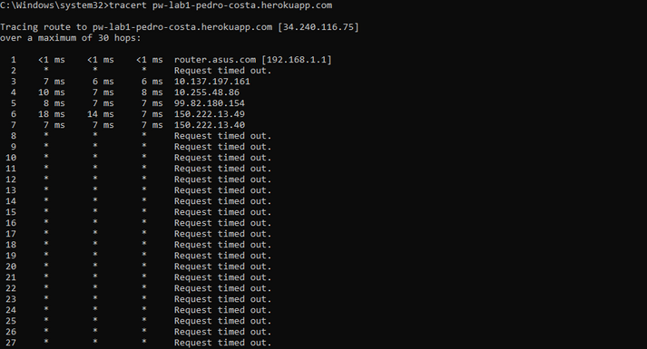

Laboratório 1
1. Alojamento de página Web na cloud
Criação de uma página Web:
- Criar uma pasta lab1. Dentro dessa pasta, criar o ficheiro index.html com o código fonte HTML.
- Criar na pasta lab1, a pasta img, e guardar dentro desta a imagem wordcloud.png.
- Abrir o ficheiro index.html com um Browser.
Linguagem HTML:
- Composta por "tags", pslavras entre parênteses "<" - ">".
- Todos os documentos HTML começam por: <!DOCTYPE html>.
- O documento em si começa com <html> e acaba com </html>.
- A parte visivel do documento está entre <body> e </body>
- Marcadores:
- h1 -> define um titulo, h2 para subtítulo,...
- p -> parágrafo.
- u -> lista não enumerada.
- li -> define uma linha.
- img -> define uma imagem.
- Atributos:
- href -> define o URL da hiperligação.
- src -> define o nome do ficheiro com a imagem.
Criação de repositório GitHub:
- Criar um repositorio no GitHub.
- Fazer push do conteúdo da pasta lab1.
Alojamento no Heroku:
- Criar conta no Heroku.
- Sincronizar com o GitHub.
- Adicionar dois ficheiros ao diretorio root:
- index.php -> com o conteúdo: <?php include_once("index.html") ?>
- composer.json -> com o conteúdo: {}
- Criar uma aplicação, atribuindo-lhe um nome.
- Na tab Deploy da aplicação, e na secção Manual Deploy clicar em Deploy Branch.
- Clicar em Open App e verificar se consegue-se ver a página HTML
2. Conhecer a Internet
Endereços IP:
Ao aceder ao site What Is My IP obtive o IP e a minha localização, verifiquei támbem que fazendo o mesmo no telémovel, utilizando dados moveis obtive um IP completamente diferente.
Como se vê nas seguintes imagens:


Percurso:
Utilizando a linha de comandos e o comando tracert vi a rota que os meus pacotes IP fazem, identificando os router pelos quais passam desde o meu PC até ao endereço de destino.
Verifiquei também que a partir do 8 deu sempre "Request timed out." Como se pode verificar:

Pegando no IP da app "34.240.116.75" e o site Geo Traceroute, escolhendo Portugal como destino de origem, obtive que o meu servidor Heroku está localizado em Frankfurt, Alemanha.

3. Acesso via HTTP à minha página Web
HTTP:
Neste passo carregei ctrl + u que fez com que visse o código fonte. Que é exatamente igual ao código escrito no index.html

Inspect:
Ao fazer "Inspect" da página vesse que foram descarregados 2 ficheiros, o tempo que cada um demorou a carregar, o tipo e o tamanho de cada um.

Selecionando cada um e verificando a tab preview, headers e timing.
- Tab headers vemos por exemplo o tipo de metodo para request, o codigo de estado, a data do pedido entre outos.
- Tab preview temos basicamente o produto final em si, seja o site ou a imagem neste caso.
- Tab timing mostra quando tempo demorou cada ficheiro a carregar.